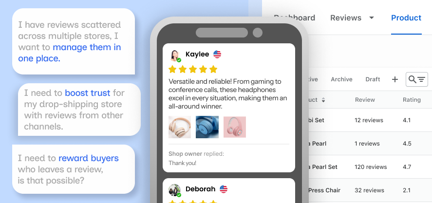

Increase Completion Rate and Satisfaction by Fixing Usability Problems
A product reviews app for Shopify merchants.
In September 2023, I joined Secomus and began working on a product reviews app. This was a new challenge since I had never been familiar with the Shopify platform, but I managed to get to know the platform and our app in just 2 months.

By default, Shopify offers limited options for displaying reviews, the review section is plain and hard to control for low-tech sellers.
We offer a full design editor and a CMS-for-review to manage reviews quality. Our app is loved among dropshippers, small sellers, mostly as they can quickly fill reviews from other selling channels, and adjust the sections to fit their stores.
What I do in this project
I was the only Product Designer on the team. I collaborated with the Product Owner and developers to identify usability problems, brainstorm ideas, and track outcomes.
I noticed users having trouble with completing the main flow, which might affect user satisfaction rate and user uninstall rate.
After performing app audit, I discovered a problem with the main flow and came up with 2 hypotheses: (1) Users weren't satisfied with the import flow, so they abandoned it and eventually uninstalled and (2) If I improve the usability of the main flow, they would complete the flow and stay with app.
To verify the first hypothesis, I focused on the 2 metrics: CSAT score (using a short survey), completion rate (a few tracking-events) and uninstall rate.

- Users tried importing multiple times without success
- Frequent rage clicks occurred on the editor modal
- Users spent too much time reading and evaluating each review
- Users accidentally closed the editor modal and had to start over.
Design a main flow that's simple, efficient, and quick to reach results
The idea was to create an update small enough to fit in the backlog, and I should not change any current technical logic of the flow, only interface. I was also in charge of tracking the outcome and verifying my second hypothesis.
While the CSAT score was above average, it was still a fairly bad score, The PO suggested targeting higher than 4.0 after improvement. About completion rate, we targeted above 80% would be able to complete this main flow.
Key updates in this projects
These updates below fixed the multiple weak points of this flow and were shipped together as a single update to create the final impact.
Initially, it took 6 screens to complete this flow. I combined similar actions into a screen, keeping 4 main interaction screens for this flow.

- 6 screens (switching between a modal and an embedded page)
- Modal used for multi-decision content (selecting qualified reviews - step 4)
- >5 fields in a section (not compliant with Shopify Design guidelines).
- 4 screens (Persistent embedded layout for the main content)
- Modals for contextual selection (selecting product - an action in step 2)
- Sectioning fields, compliant with Shopify Design guidelines
I optimized editor fields in step 2, placed less important/less interacted fields to a collapsible section. This version allows changing/reselect without having come back to previous page.

- Too many fields, hard to scan
- Start over if users want to change a previous step
- Technical limitation of modal format, which causes errors and misclicks
- Chunked info, prioritizing only required settings, collapse less-used settings
- Can change product, do not have to start over
- Embedded screen removes technical limitation of modal
The two checkboxes allowed users to filter reviews with images or texts. On older version, the two options left some missing cases and noticeable confusion.
On the new version, I made sure more cases were covered.

- "Only reviews with photos" and "Only reviews with text or photos" logically overlapped
- Users repeatedly checked and unchecked both boxes
- Simplified options, covered more case:
- Contain NO text NOR image
- Contain text only OR contain image only
- Contain text AND image
After finalizing the solution, I updated 2 more times: After internal testing and after launching 3 days, with extra adjustments after each time.
Completion rate and satisfaction rate increased.
After launching, I spent the following week watching users interact with the new UI, keeping a close eye on the CSAT and other key metrics for the app. Users can complete the flow with ease before continuing with their job.
To my hypothesis, I can conclude that fixing usability problems did contribute to satisfaction, and improving the completion rate. The uninstall rate slightly reduced in the launching week, but not enough to be proven it was impacted by my effort, since there were many other updates launched along.

My first task working with data
I was recording-biased. I relied mainly on Hotjar recordings, but recordings alone can be highly biased. Later on other tasks, I learned that not all recordings represent the larger group, and more evidence was needed before framing it was a real problem.
Sample size and tracking results. The sample size of the recordings, or even the CSAT survey, was not statistically significant, but I accepted it for the scope of this project, to drive my focus on the final metric through feedback (from CS and tracking system).
Although my domain knowledge was initially limited and some of my early ideas were not perfectly suited to the context of the app, I couldn't be more thankful to my teammates. Their support and countless rounds of feedback helped me finalize the final version and get it launched successfully.


My moment with the team